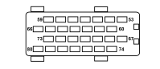

M054B ROBOTIZED TRANSMISSION CONTROL UNIT (FRONT)
- Path
- Electrical equipment > 3 CONNECTORS > M INTERMITTENT AND TIMED ELECTRONIC DEVICES > M054 ROBOTIZED TRANSMISSION CONTROL UNIT > M054B ROBOTIZED TRANSMISSION CONTROL UNIT (FRONT)
- Kind
- connector pinout (pin -> wire colour -> other end)
- Applies to
- engines: 1.2 8v; all production periods; only with equipment: Smart gearbox
- Interactive page
- https://sloeber94.github.io/elrnDB-fPnd/en/#/169003448
Applies to: engines: 1.2 8v; all production periods; only with equipment: Smart gearbox

Wiring | Colour |
|---|---|
NERO (black) |
Pin | Cable | Destination | |||
|---|---|---|---|---|---|
Sec.. | Colour | Node | Connect. | Pin | |
59 | 0,5 | W | 8 | ||
65 | 0,35 | NZ (black with violet stripe) | 1 | ||
66 | 0,35 | NV (black with green stripe) | 5 | ||
67 | 0,35 | HV (grey with green stripe) | 4 | ||
68 | 0,35 | SZ (pink with violet stripe) | 3 | ||
69 | 0,5 | ZB (violet with white stripe) | 5 | ||
73 | 0,35 | SR (pink with red stripe) | 16 | ||
74 | 0,35 | HR (grey with red stripe) | 5 | ||
76 | 0,75 | MN (brown with black stripe) | X | 3 | |
86 | |||||
77 | 0,35 | BN (white with black stripe) | 1 | ||
78 | 0,35 | AN (light blue with black stripe) | 1 | ||
79 | 0,5 | CB (orange with white stripe) | 17 | ||
80 | 0,35 | MV (brown with green stripe) | 5 | ||
Topics linked from this page (9)
- 12 FRONT
- B001D JUNCTION UNIT (FRONT)
- D001 FRONT/DASHBOARD COUPLING
- D079 TRANSMISSION SENSORS COUPLING
- D097C SHORT CIRCUITING COUPLING (FRONT)
- H001A IGNITION SWITCH (FRONT)
- H034 ROBOTIZED GEARBOX AUTO FUNCTION SWITCH
- H037 GEAR CONTROLS
- M001D BODY COMPUTER (FRONT)
Topics that link to this page (11)
- B001D JUNCTION UNIT (FRONT)
- B001D JUNCTION UNIT (FRONT)
- B001D JUNCTION UNIT (FRONT)
- B001D JUNCTION UNIT (FRONT)
- D001 FRONT/DASHBOARD COUPLING (FRONT)
- D001 FRONT/DASHBOARD COUPLING (FRONT)
- D079 TRANSMISSION SENSORS COUPLING (FRONT)
- D097C SHORT CIRCUITING COUPLING (FRONT)
- H001A IGNITION SWITCH (FRONT)
- H034 ROBOTIZED GEARBOX AUTO FUNCTION SWITCH (FRONT)
- H037 GEAR CONTROLS (FRONT)